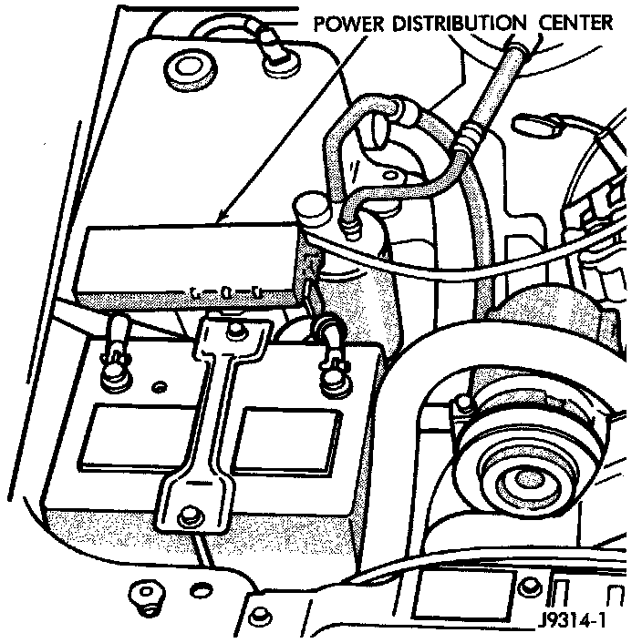

Fuel Pump Relay: Service and Repair
FUEL PUMP RELAYFig. 63 PDC:

The fuel pump relay is located in the Power Distribution Center (PDC) (Fig. 63). Refer to label on PDC cover for relay location.
REMOVAL
1. Remove PDC cover.
2. Remove relay from PDC.
3. Check condition of relay terminals and PDC connector terminals for damage or corrosion. Repair if necessary before installing relay.
4. Check for pin height (pin height should be the same for all terminals within the PDC connector). Repair if necessary before installing relay.
INSTALLATION
1. Install relay to PDC.
2. Install cover to PDC.